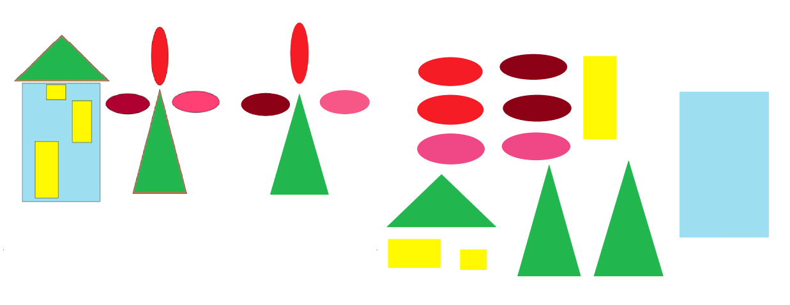
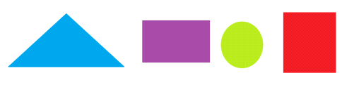
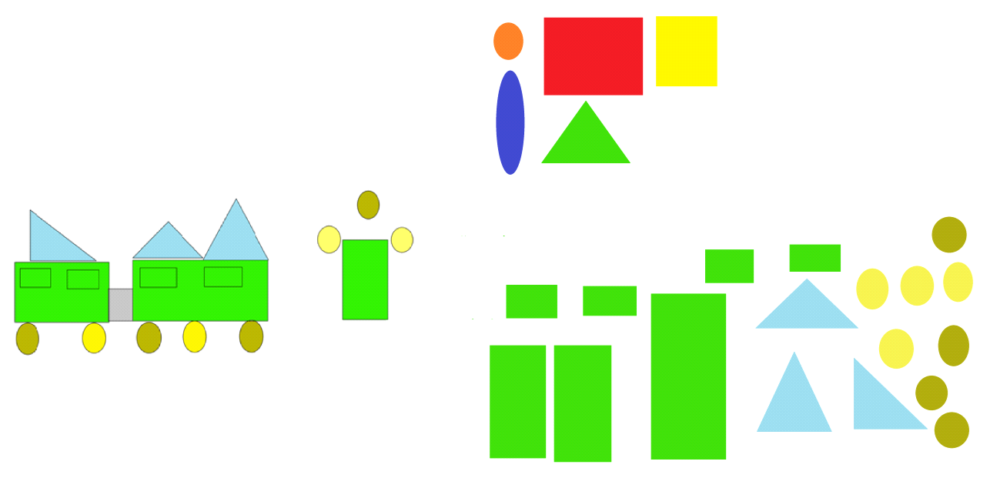

Identificación de los patrones sensoriales de forma, color, las relaciones de tamaño y la posición en el espacio para adornar o armar objetos en su entorno.
Modelos para armar objetos de su entorno. Varía el tamaño del rectángulo, el color del óvalo y la forma del triángulo
Modelo:
Piezas adicionales:
Se invita a los niños a escuchar un cuento corto: “El pajarito”
Un día un pajarito en un árbol yo encontré y a casa lo llevé.
Mi mamá una jaula buscó y tanto se entristeció, que nunca más cantó,
entonces yo muy bravito pensé mucho, pensé ¿Y sabes lo que logré?
que más tarde ¡Lo solté! El alegre su vuelo alzó y hasta el cielo llegó.
Se conversa acerca del cuento y se les pregunta: ¿de qué trata el cuento? ¿Qué hizo la mamá del niño? ¿Ustedes encierran en jaula los pajaritos? ¿Por qué no deben poner en jaulas los pájaros? ¿Qué deben hacer para cuidar y proteger los pájaros, los árboles y la naturaleza? ¿Por qué es importante amar, cuidar y conservar las especies de plantas y animales?
Posteriormente se les orienta qué deben hacer y cómo para armar una casita y árboles. Se presenta el modelo a los niños y se les pide que lo observen bien y lo describan detalladamente el niño debe decir, qué se representa y después partir de las figuras que lo integran, su color, forma y tamaño, relación espacial con relación a las demás figuras, se les pregunta: ¿qué figuras están en el centro?, ¿qué colores tienen? ¿qué forma están ubicadas arriba?, de esta forma se realiza con las figuras de abajo, a los lados y por último los detalles de ese modelo, haciendo notar las variaciones de los patrones y su ubicación con relación a los demás elementos ¿las figuras son iguales? ¿En qué se diferencian? ¿Cuál está a la derecha y a la izquierda?
Luego se les pide que observen sus materiales y lo describan. Se invita a armar el modelo por parte de los niños y al terminar se les realizan preguntas: ¿Te quedó igual que el de la seño?, ¿qué figura te faltó? ¿En qué se parecen? ¿En qué se diferencian? Se les orienta que arregle las figuras que se equivocó. Terminado la actividad se les invita a los niños ir al rincón de la naturaleza del salón y darle de comer a los animalitos que hay se encuentran.
Piezas adicionales:
Se motiva a los niños con la visualización del video de la canción “El trencito” de Liuba María Hevia, después se conversa de lo que se observa en el video: ¿qué medio de transporte se ve en el video? ¿Para qué se utiliza el tren? ¿Cómo está conformado el tren? por locomotora y vagones, ¿que echan los trenes por la chimenea? humo. Se les explica que ese humo no se puede oler de cerca porque es dañino y contamina nuestra respiración y el ambiente. Y que los niños no pueden estar en las líneas, ni en los andenes de las terminales de trenes solos, porque es peligroso.
Después se les orienta como armar un trencito y el árbol con figuras geométricas, se presenta el modelo a los niños y se les pide que lo observen bien y lo describan detalladamente, el niño debe decir, qué se representa y después partir de las figuras que lo integran, su color, forma y tamaño, relación espacial con relación a las demás figuras, se les pregunta: ¿qué figuras están en el centro?, ¿qué colores tienen?, ¿qué forma están ubicadas arriba y abajo?, de esta forma se realiza con las figuras de los lados y por último los detalles de ese modelo, haciendo notar las variaciones de los patrones y su ubicación con relación a los demás elementos. ¿Las figuras son iguales? ¿En qué se diferencian? ¿Cuál está a la derecha y a la izquierda?
Luego se les piden que observen sus materiales y lo describan. Se invita a armar el modelo por parte de los niños y al terminar se les realizan preguntas: Te quedó igual que el de la seño, ¿qué figura te faltó? ¿En qué se parecen?, ¿En qué se diferencian? Se les orienta que arregle las figuras que se equivocó. Terminada la actividad se les invita a los niños hacer una fila y que coloquen las manos encimas de los hombros del compañero que esta delante para formar un trencito una vez armado se les dice que digan la rima:
“Erre con erre cigarro
Erre con erre barril
Rápido corren los carros
Por la línea del ferrocarril.
En la medida que los niños vayan para el área se realiza la repetición del sonido ch, ch, ch, rápido, lento, alto, bajo.